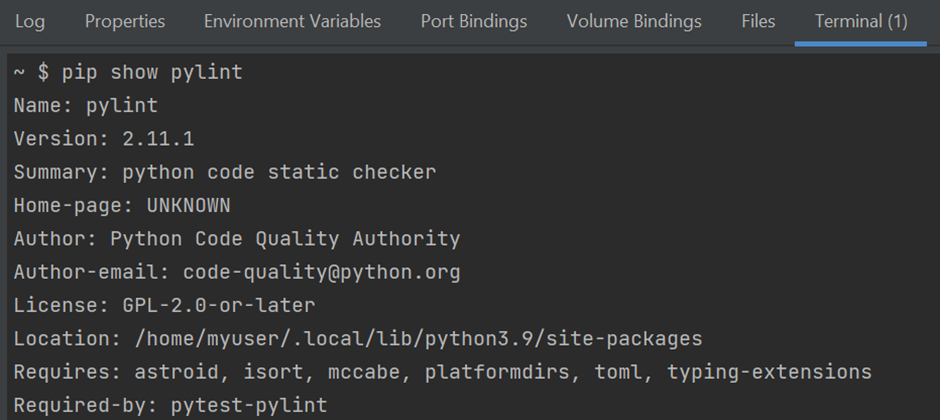
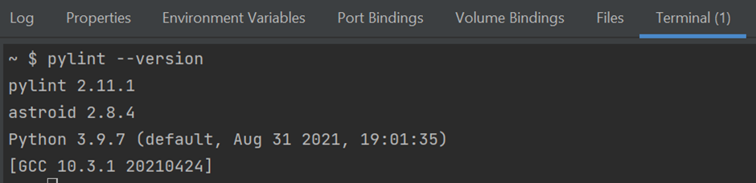
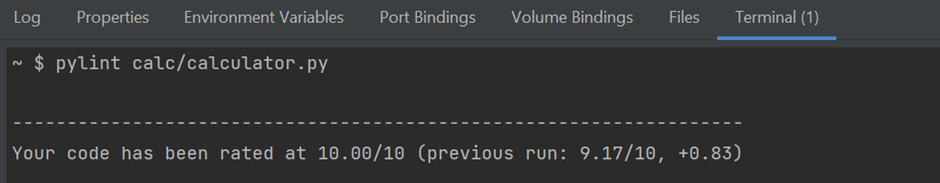

Article 1
Pylint: Pylint is a Python tool that checks a module for coding standards. PEP8 is the standard and pylint is a good mechanical test to help us in attaining that goal.
The range of checks run from Python errors, missing docstrings, unused imports, unintended redefinition of built-ins, to bad naming and more.
Steps to install and implement pylint:
1. To install pylint run pip install pylint in the terminal
2. To check current status of pylint

3. To check version for installed pylint run pylint --version

4. Now coming to the how to use the pylint, the best way to use pylint is to test individual file from the project.
pylint filename

This will rate your code on a scale of 10. If there are any error in the file it will list it down.
Glossary of OOP terms in python
Factory: Factory Method is a Creational Design Pattern that allows an interface or a class to create an object, but lets subclasses decide which class or object to instantiate. Here, objects are created without exposing the logic to the client, and for creating the new type of object, the client uses the same common interface.
Instantiation: Instantiating a class is creating a copy of the class which inherits all class variables and methods. Instantiating a class in Python is simple. To instantiate a class, we simply call the class as if it were a function, passing the arguments that the __init__ method defines. The return value will be the newly created object.
class Foo():
def __init__(self,x,y):
print x+y
f = Foo(3,4)
Class and Objects: A class is a user-defined blueprint or prototype from which objects are created. Classes provide a means of bundling data and functionality together. Creating a new class creates a new type of object, allowing new instances of that type to be made. Each class instance can have attributes attached to it for maintaining its state. Class instances can also have methods (defined by their class) for modifying their state.
An Object is an instance of a Class. A class is like a blueprint while an instance is a copy of the class with actual values.
class Dog:
attr1 = "mammal"
attr2 = "dog"
def fun(self):
print("I'm a", self.attr1)
print("I'm a", self.attr2)
# Object instantiation
Rodger = Dog()
print(Rodger.attr1)
Rodger.fun()
In the above example, an object is created which is basically a dog named Rodger. This class only has two class attributes that tell us that Rodger is a dog and a mammal.
namespace: A namespace is a system that has a unique name for each and every object in Python. An object might be a variable or a method. Python itself maintains a namespace in the form of a Python dictionary. Let’s go through an example, a directory-file system structure in computers. Needless to say, that one can have multiple directories having a file with the same name inside every directory. But one can get directed to the file, one wishes, just by specifying the absolute path to the file.
# var1 is in the global namespace
var1 = 5
def some_func():
# var2 is in the local namespace
var2 = 6
def some_inner_func():
# var3 is in the nested local namespace
var3 = 7
Constructor: Constructors are generally used for instantiating an object. The task of constructors is to initialize(assign values) to the data members of the class when an object of the class is created. In Python the __init__() method is called the constructor and is always called when an object is created.
def __init__(self):
# body of the constructor
This is default constructor, but constructor also can be parameterized.
Fixtures: Fixtures are functions, which will run before each test function to which it is applied. Fixtures are used to feed some data to the tests such as database connections, URLs to test and some sort of input data. Therefore, instead of running the same code for every test, we can attach fixture function to the tests and it will run and return the data to the test before executing each test.
@pytest.fixture
def input_value():
input = 39
return input
def test_divisible_by_3(input_value):
assert input_value % 3 == 0
type hint: Python is a dynamically typed language, which means you never have to explicitly indicate what kind of types variable has. But in some cases, dynamic typing can lead to some bugs that are very difficult to debug and in those cases, Type Hints or Static Typing can be convenient. Type Hints has been introduced as a new feature in Python 3.5.
we have to use a static type checker that analyzes our code and tries to detect if we are violating our Type-Hints or not.
The best known type checker is “mypy“. We can install it by simply using pip .
# factorial function
def factorial(i: int) -> int:
if i<0:
return None
if i == 0:
return 1
return i * factorial(i-1)
# passing a fraction to the function
print(factorial(5.01))
In this example we have passed floating value even after hinting for integer it will give an error with specific msg. Argument 1 to factorial has incompatible type float; expected int ” and which is a very clear message.
Type cast: Type Casting is the method to convert the variable data type into a certain data type in order to the operation required to be performed by users.
There can be two types of Type Casting in python:
Implicit: Python converts data type into another data type automatically. In this process, users don’t have to involve in this process.
a = 7
print(type(a))
b = 3.0
print(type(b))
c = a + b
print(c)
print(type(c))
In this we are adding the integer and float value which results in as the float.
Explicit: Python need user involvement to convert the variable data type into certain data type in order to the operation required.
a = 5
n = float(a)
print(n)
print(type(n))
Here in this example we have type cast the integer a into the float explicitly.
Unit Test: Unit Testing is the first level of software testing where the smallest testable parts of a software are tested. This is used to validate that each unit of the software performs as designed.
import unittest
class SimpleTest(unittest.TestCase):
# Returns True or False.
def test(self):
self.assertTrue(True)
if __name__ == '__main__':
unittest.main()
This is the basic test code using unittest framework, which is having a single test. This test() method will fail if TRUE is ever FALSE.
Outcomes Possible :
OK - All the tests are passed
Fail - AssertionError exception
Error - exception other than AssertionError
Static Variables: When we declare a variable inside a class, but outside the method, it is called a static or class variable. It can be called directly from a class but not through the instances of a class. However, the static variables are quite different from the other member, and it does not conflict with the same variable name in the Python program.
class Employee:
dept = 'Information Technology' #Define static/class variable
print (Employee.dept)
Static Methods: Python has a static method that belongs to the class. It is just like a static variable that bounds to the class rather than the class's object. A static method can be called without creating an object for the class. It means we can directly call the static method with the reference of the class name. Furthermore, a static method is constrained with a class; hence it cannot change the state of an object. A @staticmethod is an inbuilt decorator that defines the static method inside the class. It does not receive any argument as a reference to a class instance or a class calling the static method itself.
class Marks:
@staticmethod
def Math_num(a, b): # define the static function
return a + b
print (" Total Marks in Maths" , Marks.Math_num(64, 28))
Output:
Total Marks in Maths 92
Class method: The class method in Python is a method, which is bound to the class but not the object of that class. The class method takes cls (class) as first argument. Class method can access and modify the class state.
class my_class:
@classmethod
deffunction_name(cls, arguments):
#Function Body
return value
Facade: The Facade Pattern is a structural design pattern. It provides a simplified interface to a set of other interfaces, abstractions and implementations within a system that may be full of complexity and/or tightly coupled.
class SubSystemClassA:
@staticmethod
def method():
return "A"
class SubSystemClassB:
@staticmethod
def method():
return "B"
class Facade:
def __init__(self):
self.sub_system_class_a = SubSystemClassA()
self.sub_system_class_b = SubSystemClassB()
def create(self):
result = self.sub_system_class_a.method()
result += self.sub_system_class_b.method()
return result
FACADE = Facade()
RESULT = FACADE.create()
print("The Result = %s" % RESULT)
Output:
The Result is = AB
Design Patterns: Design Patterns is the most essential part of Software Engineering, as they provide the general repeatable solution to a commonly occurring problem in software design. They usually represent some of the best practices adopted by experienced object-oriented software developers.
Creational Design Pattern: Creational patterns provides essential information regarding the Class instantiation or the object instantiation. Class Creational Pattern and the Object Creational pattern is the major categorization of the Creational Design Patterns. While class-creation patterns use inheritance effectively in the instantiation process, object-creation patterns use delegation effectively to get the job done.
Factory Method
Abstract Factory Method
Builder Method
Prototype Method
Singleton Method
Structural Design Patterns: Structural design patterns are about organizing different classes and objects to form larger structures and provide new functionality while keeping these structures flexible and efficient.
Mostly they use Inheritance to compose all the interfaces.
It also identifies the relationships which led to the simplification of the structure.
Adapter Method
Bridge Method
Composite Method
Decorator Method
Facade Method
Proxy Method
FlyWeight Method
Behavioral Design Pattern: Behavioral patterns are all about identifying the common communication patterns between objects and realize these patterns. These patterns are concerned with algorithms and the assignment of responsibilities between objects.
Chain of Responsibility Method
Command Method
Iterator Method
Mediator Method
Memento Method
Observer Method
State Method
Strategy Method
Template Method
Visitor Method
Proprty: Python programming provides us with a built-in @property decorator which makes usage of getter and setters much easier in Object-Oriented Programming.
class Celsius:
def __init__(self, temperature=0):
self.temperature = temperature
def to_fahrenheit(self):
return (self.temperature * 1.8) + 32
# Create a new object
human = Celsius()
# Set the temperature
human.temperature = 37
print(human.temperature)
print(human.to_fahrenheit())
Output:
37
98.60000000000001